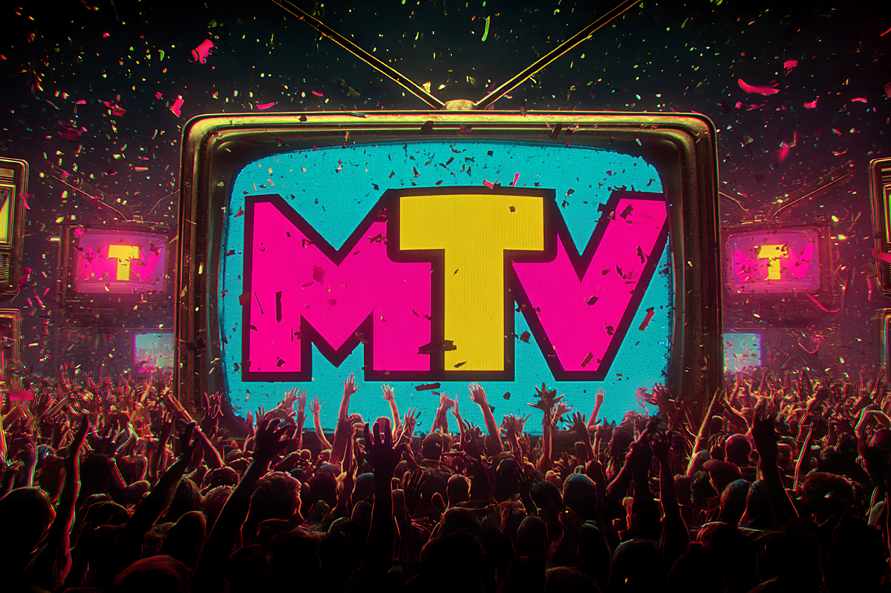
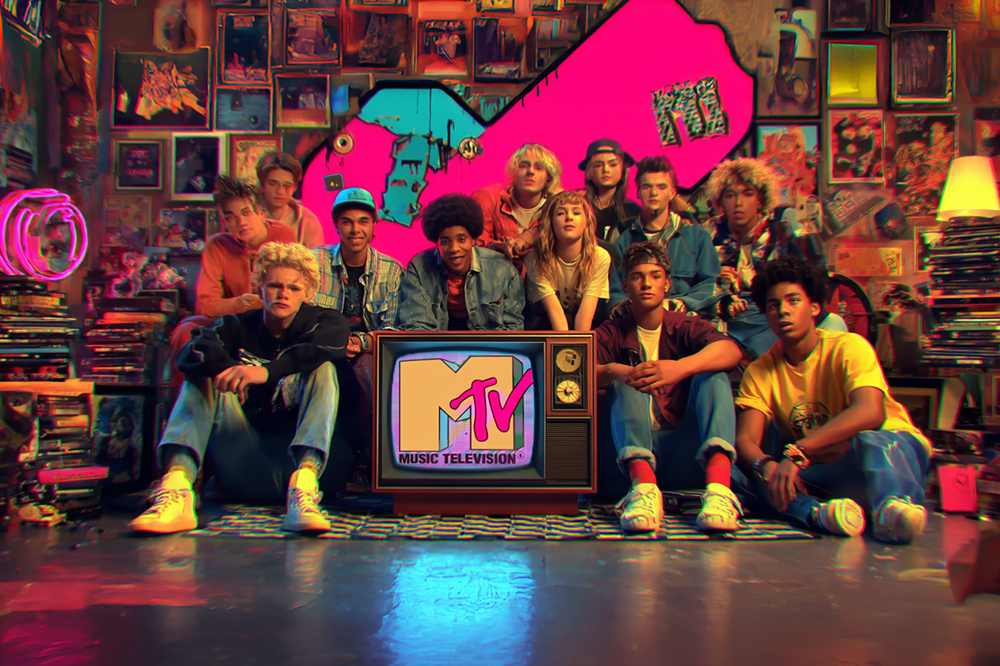
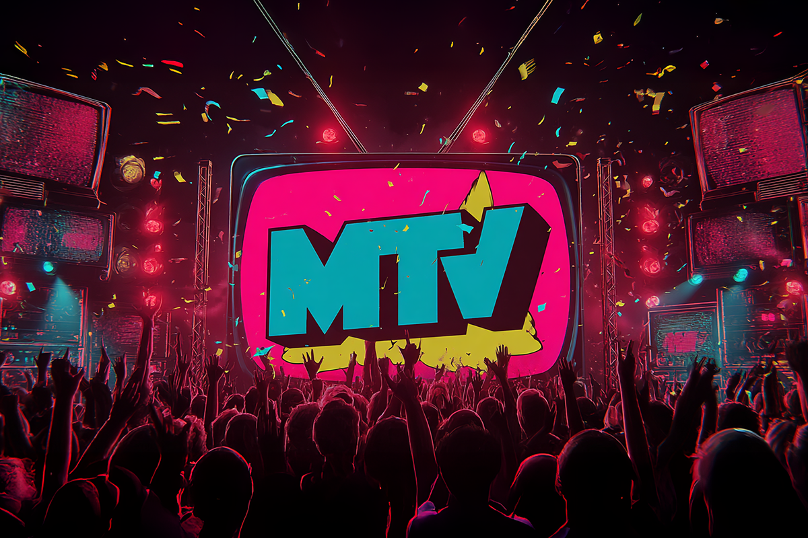
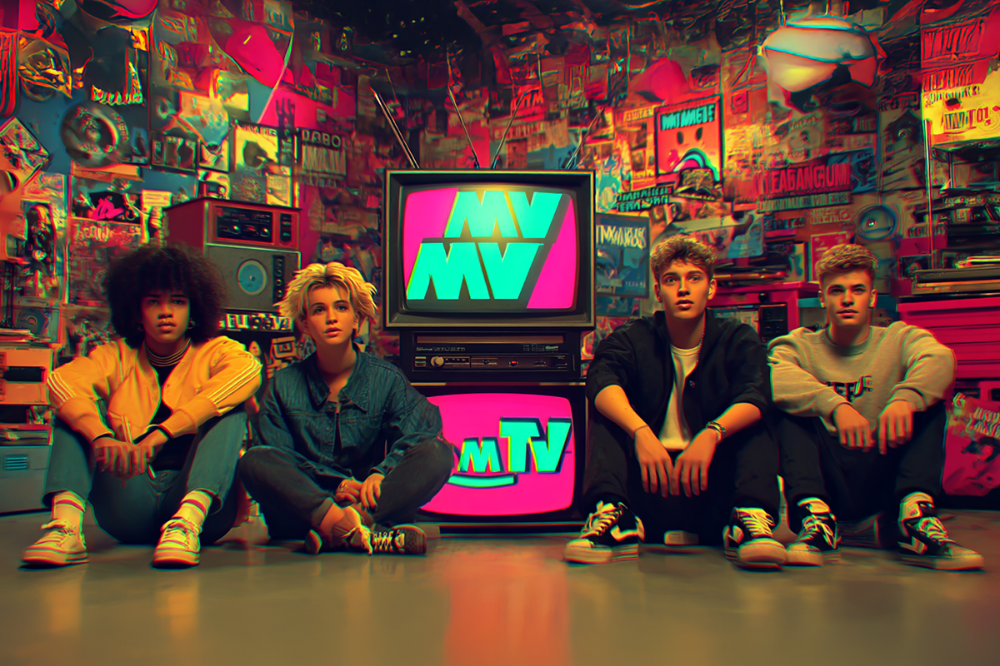
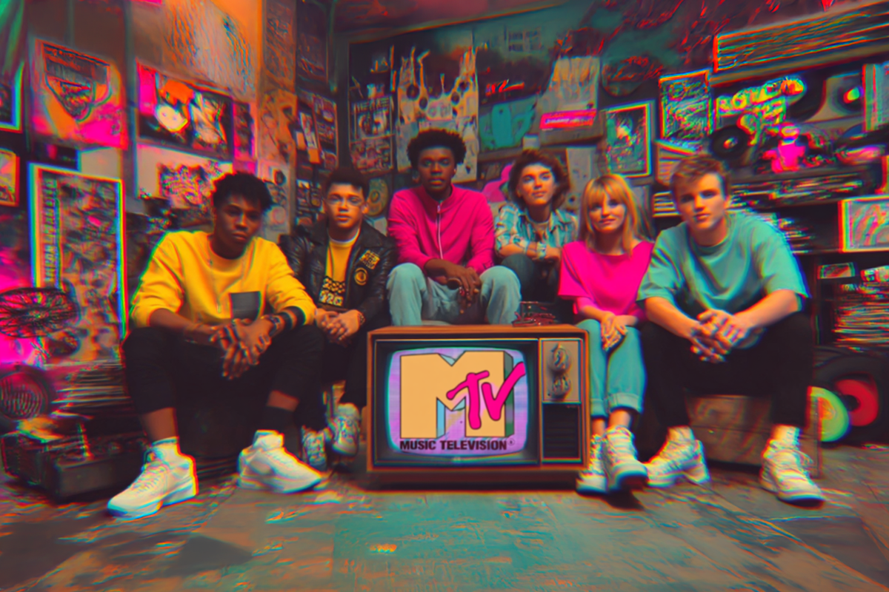

MTV: cuando la TV armaba las playlists
Un breve recorrido por la historia del icónico canal musical
Un breve recorrido por la historia del icónico canal musical

Después de ser el canal más renombrado si de vídeos musicales se trata, una vitrina para nuevos y antiguos talentos, además de moldear los gustos de varias generaciones, MTV cierra oficialmente sus puertas a la música.
Hace unas semanas la misma estación publicó su decisión, la que terminó calando hondo en los otrora seguidores acérrimos de este canal, tan preciado desde su aparición por ser la principal fuente musical de todos quienes crecimos frente al televisor en los 90’s y los 2000.
Con este cambio en la sintonía del canal televisivo, y junto con el finde una era icónica en la cultura pop, toca preguntarnos: ¿qué estamos perdiendo y qué significó MTV en nuestras vidas?

MTV tuvo su primera transmisión en 1981 y su misión principal fue transmitir vídeos musicales las 24 horas del día.
El primer vídeo musical en ser transmitido fue justamente el track “Video Killed the Radio Star” (“El vídeo musical mató a la estrella radial”) de The Buggles, lo que parecía casi una profecía a la forma en que la música iba a comenzar a ser transmitida y popularizada por los próximos 40 años.
Es que el canal de televisión realmente fue un pionero en su género, y su visión marcó un precedente para la narrativa y estéticas de todos los artistas de la época. Ya no solo se trataba de hacer buena música, sino que el esfuerzo tras un buen producto audiovisual era lo que hacía la diferencia entre lo bueno, lo grande y lo que podría ser un éxito asegurado.

Todos quienes entienden de la historia musical y los hits que marcaron las distintas épocas, entienden que los años 90’s fueron una oda a la diferencia: nunca habíamos visto tantos géneros musicales diferentes pegar con tanta intensidad.
En esos momentos MTV ya se había consolidado y ahora le podíamos poner rostro a cada una de las grandes bandas y artistas que adornaban y musicalizaban cada día nuestra pantalla. En realidad, ya nos habíamos acostumbrado a consumir música a través de las imágenes.
Esa fue la década donde también se comenzó a dar vida a programas que se especializaban en géneros musicales específicos, como el rock, el metal o el hip-hop. Pero para nosotros la etapa más importante vendría en 1993 con MTV Latino, un espacio exclusivo para este lado del continente donde se le brindaba vitrina a una lista crucial de artistas latinoamericanos, desde Chile hasta México.

Cómo olvidarnos de esta propuesta musical que, al día de hoy, sigue siendo referenciada como una de las grandes instancias en la carrera de los artistas populares. Básicamente, llegar a tener un concierto “desenchufado” era uno de los mayores honores en una trayectoria musical, tanto por la oportunidad de presentar una nueva puesta en escena y otra forma de desenvolver una propuesta artística, como por el hecho de que MTV brindara su espacio (tomando en cuenta la popularidad del canal y su alcance).
Es que sin MTV no existiría en el imaginario colectivo este formato, ni tampoco tendríamos en el subconsciente algunas de esas presentaciones tan icónicas que terminaron moldeando nuestro concepto de música en vivo.
Nirvana, Alice in Chains, Eric Clapton, Alicia Keys, Los Tres, Café Tacuba, Soda Stereo, Pearl Jam y Oasis son solo algunos de los MTV Unplugged que marcaron y siguen marcando a varias generaciones de incipientes y antiguos melómanos.

Si hablamos de MTV hablamos tenemos que detenernos, sí o sí en sus rankings musicales, una gran forma de resumir y marcar precedente en lo que íbamos a escuchar, la mayoría de las veces, por varias semanas en diferentes plataformas musicales.
Es bueno recordar que lo que sonaba en MTV era también la vara con la que se medía la popularidad en su generalidad, así que si tu vídeo musical lograba aparecer consecutivamente en el canal, era más que seguro que se reproduciría en otras grandes plataformas de escucha, como la radio.
Volviendo a los rankings, los 10 más pedidos debe ser de los grandes referentes si de listas musicales se trata. En Latinoamérica contábamos todos los días con este listado, con una hora de duración y solo interrumpido por algunos spots del canal. Los fines de semana igual teníamos ranking, pero con los 20 más pedidos, dándole espacio a otros artistas –tanto de habla inglesa como española–, con sus últimos singles.
Para qué hablar de los MTV Music Awards, un evento que reunía y premiaba desde mediados de los 80’s a lo mejor y más bullado de la música popular (que en los años del prime del canal reunía desde pop hasta nu metal).

Muchos de los momentos más icónicos de la cultura popular que hasta el día de hoy aparecen en las redes sociales, tienen que ver con los acontecimientos que sucedían cada año en los VMA’s. Si no viviste estos shows en vivo, lamentablemente debo comentar que te perdiste de mucho. Por suerte, en plataformas como YouTube puedes encontrar muchos de estos momentos para revivirlos las veces que quieras.
A finales de este año se cierran los últimos espacios musicales del gigante MTV. El canal no fue capaz de competir con las plataformas actuales, como TikTok e Instagram, y terminó por prescindir del formato que tan conocido lo volvió por décadas.
Una era termina y no queda más que abrazar el futuro y recordar con nostalgia la tremenda influencia que, en muchos jóvenes de los 80’s , 90’s y 2000, tuvo la otrora Televisión Musical.
 Cultura
CulturaSé que suena raro hablar de calor extremo mientras en Chile todos están buscando la parka más gruesa del clóset.
 Cultura
CulturaEl hecho de que estemos entrando al mes de julio no se puede creer. Pero lo que tampoco se puede creer es la cantidad de artistas que han…
 Cultura
CulturaCuando hablamos de trabajos clásicos de la música chilena, siempre se nombran los discos de Violeta Parra, Víctor Jara, Los Jaivas o…